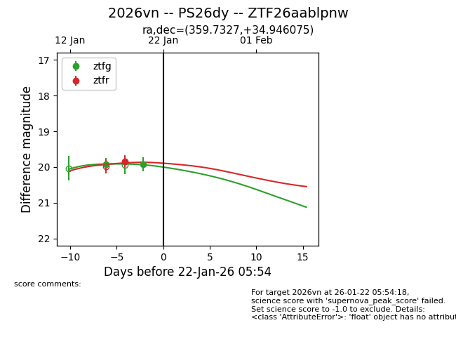
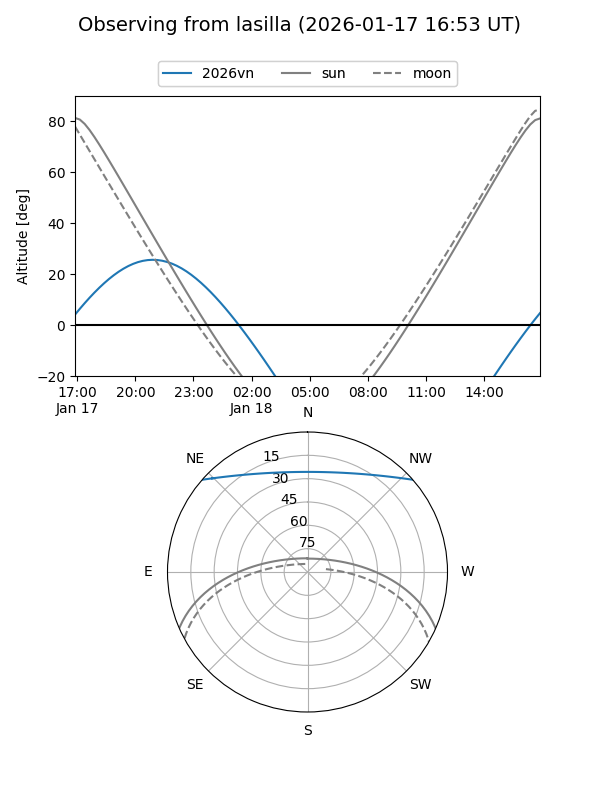
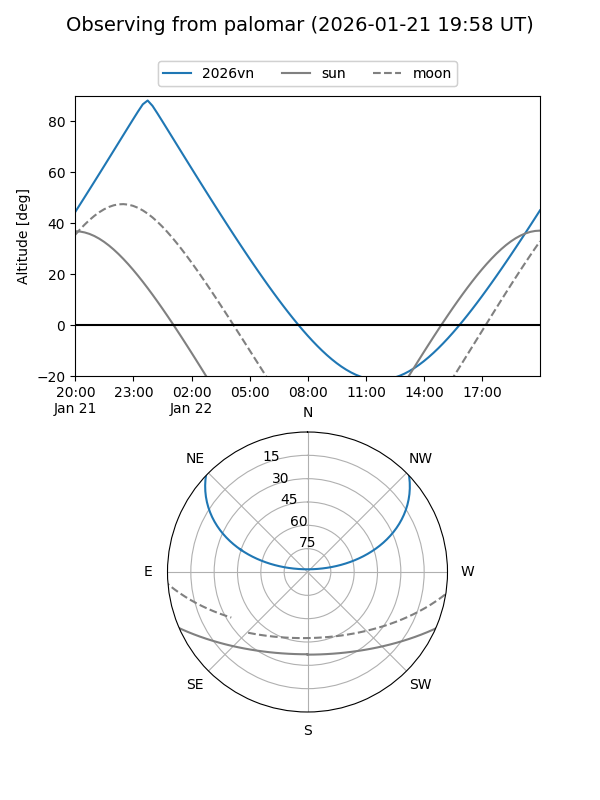
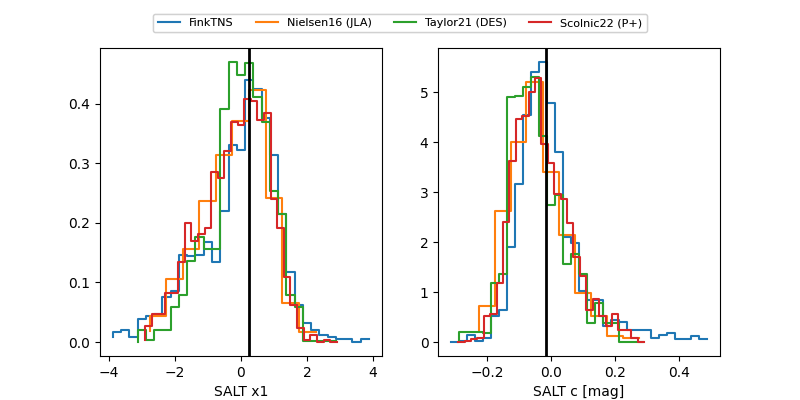

2026vn
Target 2026vn at 2026-01-18 05:45
Aliases and brokers:
FINK: link
Lasair: link
ALeRCE: link
TNS: link
YSE: link
alt names
ZTF26aablpnw (ztf,fink_ztf)
2026vn (tns,yse)
PS26dy (panstarrs)
Coordinates:
equatorial (ra, dec) = 359.7327,+34.94608
equatorial (HMS+DMS) = 23:58:55.86,+34:56:45.87
galactic (l, b) = (110.9051,-26.69645)
Flags:
Photometry:
last ztfg=19.92, ztfr=19.84
1 ztfg, 1 ztfr detections
Lightcurve

Visibility


Additional plots
